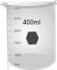
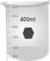

गाइड
1. पावर बटन पर क्लिक करने वाले इंस्ट्रूमेंट को चालू करें और इंस्ट्रूमेंट को इनिशियलाइज़ करने के लिए 30 मिनट तक प्रतीक्षा करें।
2. बनाओ, 0.01 N H2SO4 में 0.001 एम, पोटेशियम डाइक्रोमेट का जलीय घोल।
3. साफ, सूखे बीकर लेने के लिए बीकर पर क्लिक करें। स्वच्छ, सूखे बीकर में घोल डालने के लिए वॉल्यूमेट्रिक फ्लास्क पर क्लिक करें।
4. बीकर से उचित मात्रा में घोल एकत्र करने के लिए माइक्रोप्रिपेट पर क्लिक करें। उस पर क्लिक करके एक क्युवेट लें।
5. माइक्रोवेट से क्युवेट पर क्लिक करके समाधान को डालो। (वास्तविक माप में, क्युवेट लगभग लगभग भरा हुआ है। इसकी मात्रा का दो-तिहाई है।)
6. इसे खोलने के लिए स्पेक्ट्रोफोटोमीटर के ढक्कन पर क्लिक करें।
7. नमूना धारक में इसे रखने के लिए क्युवेट पर क्लिक करें। एक aq का उपयोग करना है। इस माप में नमूना रिक्त या संदर्भ के रूप में 0.01 N H2SO4 है। यहाँ एक डबल बीम स्पेक्ट्रोफोटोमीटर दिखाया गया है। इस मामले में, नमूना नमूना धारक और नमूना बैंक या संदर्भ धारक में संदर्भ को एक साथ रख सकता है।
8. कंप्यूटर मॉनिटर और फिर स्कैन बटन पर क्लिक करके तरंग दैर्ध्य स्कैन चलाएं और तरंग दैर्ध्य स्कैन का निरीक्षण करें। वास्तविक स्पेक्ट्रोफोटोमीटर ऑपरेशन में, नमूना के लिए घटना प्रकाश की एक उपयुक्त तरंग दैर्ध्य रेंज को चुना जा सकता है और तरंग दैर्ध्य स्कैन कंप्यूटर सॉफ्टवेयर के माध्यम से चलाया जाता है। एक स्कैन को अवशोषकता या संप्रेषण मोड में चला सकता है। स्कैन डेटा को कंप्यूटर में संग्रहीत किया जाता है। यदि स्पेक्ट्रोफोटोमीटर एक एकल बीम उपकरण है, तो पहले नमूना रिक्त या संदर्भ एक क्यूवेट में लिया जाता है और नमूना के बाद तरंग दैर्ध्य स्कैन चलाया जाता है। संबंधित तरंगदैर्ध्य के लिए नमूना डेटा से संदर्भ डेटा को घटाना है।
9. नया माप शुरू करने के लिए रीसेट बटन पर क्लिक करें। विभिन्न पथ लंबाई के cuvettes के साथ माप दोहराएं।
10. डेटा टैब पर क्लिक करके सभी डेटा एकत्र करें। विभिन्न पथ लंबाई के लिए विभिन्न तरंग दैर्ध्य पर नमूने के अवशोषण को प्लॉट करें और अधिकतम अवशोषण यानी वर्णक्रमीय चोटी के पदों की तरंग दैर्ध्य निर्धारित करें।
11. एक विशेष तरंग दैर्ध्य (जैसे, 350 एनएम) बनाम पथ लंबाई के लिए अवशोषण मानों को प्लॉट करें और रैखिक प्रतिगमन की गणना करें। सहसंबंध गुणांक पर ध्यान दें जो एक अंशांकन की गुणवत्ता का एक उपाय है और यहां बताता है कि अंशांकन बिंदुओं के लिए एक सीधी रेखा कितनी अच्छी है।
12. दो अन्य तरंग दैर्ध्य कहते हैं, 375 एनएम और 440 एनएम के लिए पथ की लंबाई बनाम अवशोषण मूल्यों की साजिश को दोहराएं और रैखिक प्रतिगमन की गणना करें।
13. तीन तरंग दैर्ध्य 350 एनएम, 375 एनएम और 440 एनएम के लिए पथ लंबाई के स्थान पर संप्रेषण मूल्यों के स्थान पर संप्रेषण लेने के समान तीन भूखंडों का निर्माण और रैखिक प्रतिगमन की गणना करें। सहसंबंध गुणांक पर ध्यान दें।
14. लैंबर्ट कानून को देखें कि क्या अवशोषण और संप्रेषण मूल्यों में पथ लंबाई के साथ रैखिक सहसंबंध है या नहीं।
15. किसी दिए गए तरंग दैर्ध्य के लिए इसी पथ लंबाई द्वारा अवशोषण डेटा को विभाजित करके 1 मिमी पथ की लंबाई के लिए अवशोषण माप को सामान्य करें। किसी दिए गए तरंग दैर्ध्य में सामान्यीकृत डेटा (प्रयोगात्मक त्रुटि के भीतर) पथ की लंबाई के होते हैं? अपने परिणामों पर चर्चा करें।


 
